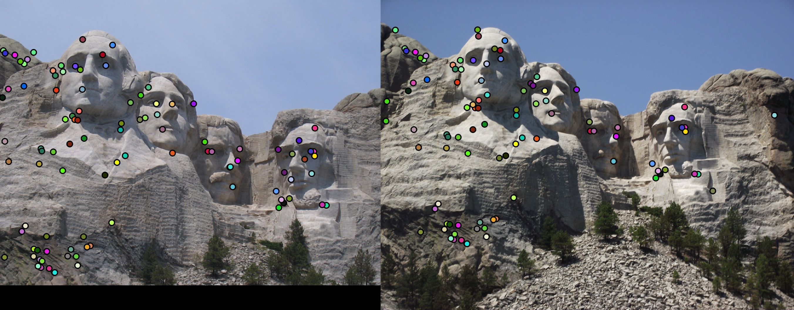
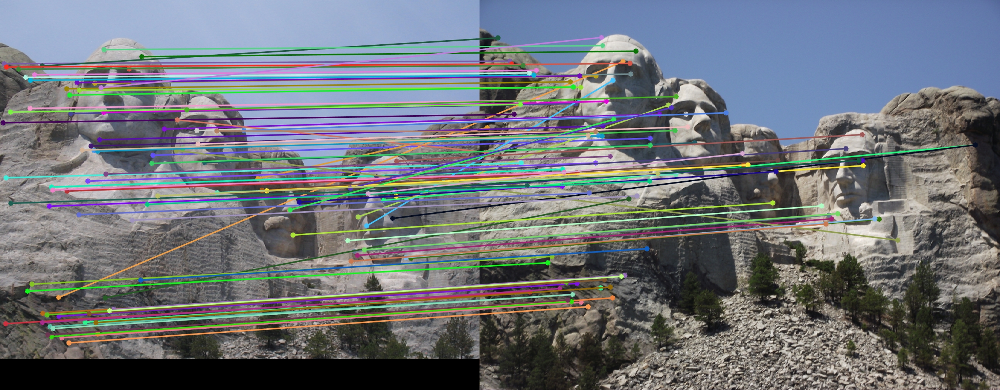
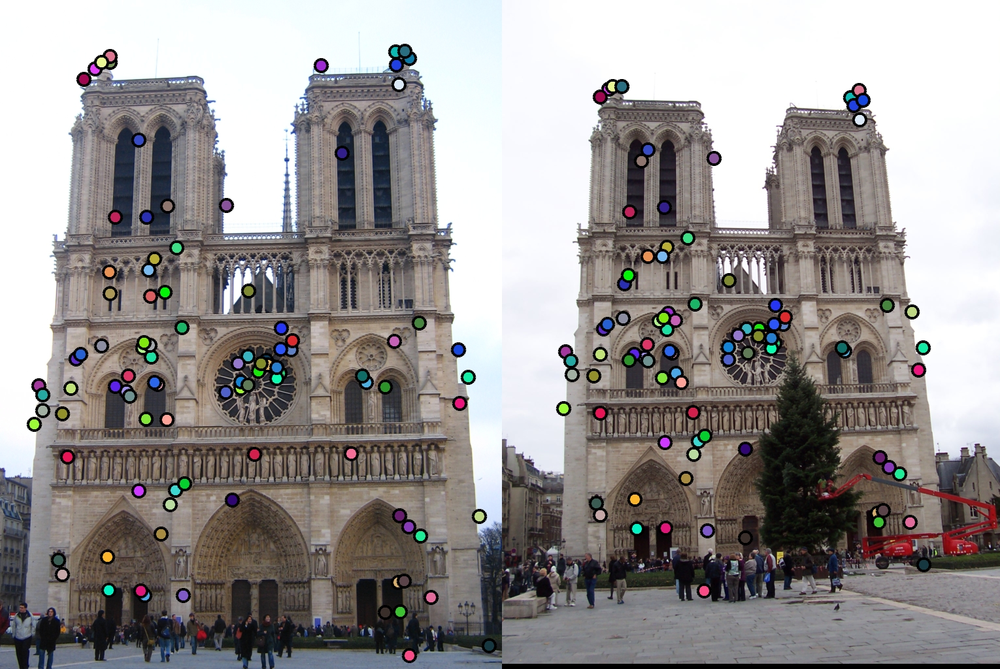
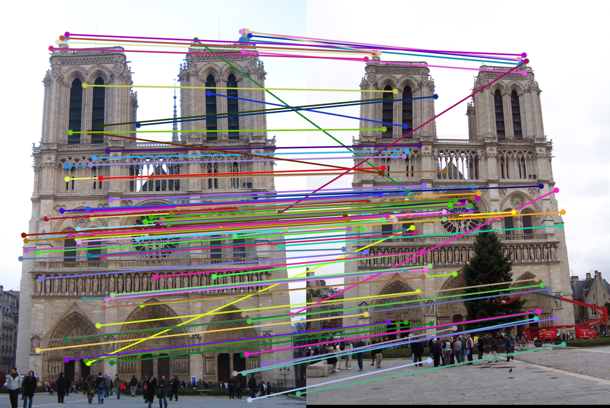
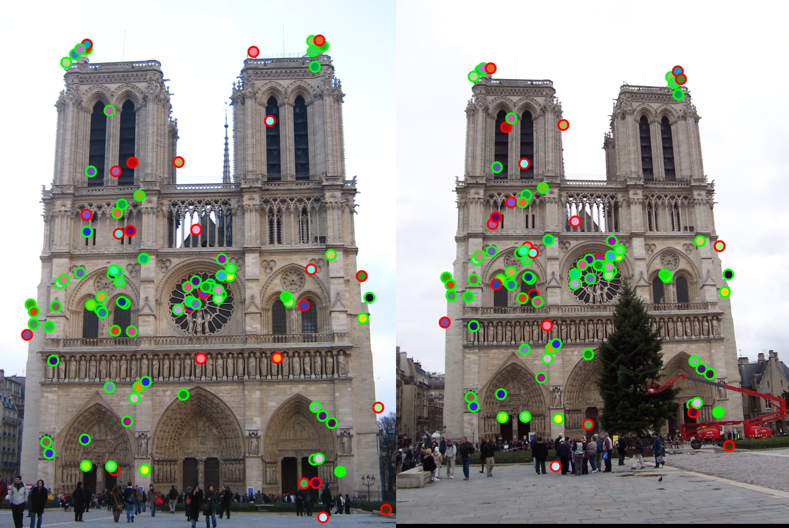

Evaluation image for Mount Rushmore
Project 2 is the implementation of the SIFT feature building as well as interest point detection. We were given three sets of images with ground truth for testing. Here is how I implemented the algorithm.
For interst points I first tried the basic harris point detector, which worked fine (I am not sure what accuracy I would have gotten with the harris corner detector because I updated a major bug in my feature building algorithm later). However, I later tried the following algorithm,
*Orignially I compared the point with all 26 neighbours as prescribed but found that the higher scale image had very high values and a lot of points were being eliminated. I am not sure why this was happening. If you check the code, this part is commented out.
As per my understanding, feature descriptors are like fingerprints for each keypoint. They can take any possible detail about the keypoints and encode it in such a way that they can be compared later without that of another keypoint. For building feature descriptors, I tried the following algorithm,
Now that we have collected features for both images, it is time to compare them. I used euclidean distance and the nearest neighbour algorithm described in the textbook (equation 4.18) to calculate corresponding keypoints using brute force 2 loop system. Since, the number of keypoints collected were high, the matching algorithm with complexity O(n^2), took quite a while as displayed below.
Accuracy on top 100 most confident matches- 81%
Time to run ~ 511 sec
Surprisingly, I got higher accuracy with the Mount Rushmore image than with the Norte Dame image. I discovered this at the end when I wanted to check if my code worked with the Mount Rushmore image or not. However, all this efficiency comes at the cost of the running time.
|  |
|  |
Accuracy on top 100 most confident matches- 75%
Time to run ~ 291 sec
|  |
|  |
|  |
The high running times are because of the brute force matching algorithm and the fact that the number of keypoints collected were usually high. Also, I got zero matches right with the Episcopal Gaudi image set.